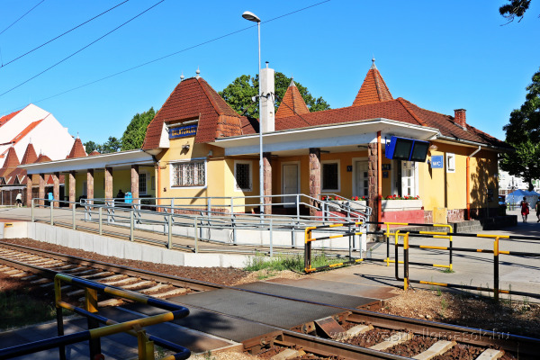
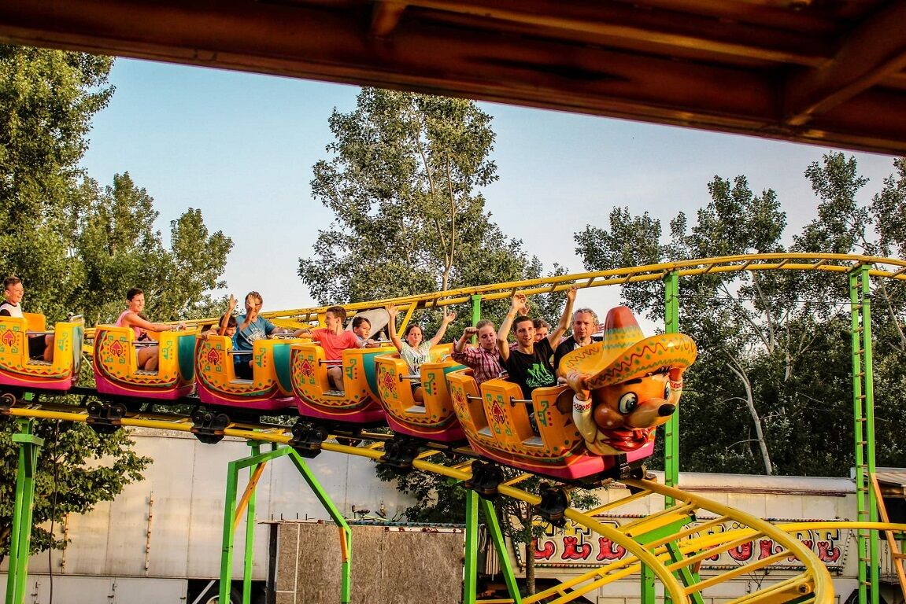

Warum lohnt sich ein Besuch in Balatonlelle?
Balatonlelle ist einer der beliebtesten Ferienorte am südlichen Balatonufer; der Bahnhof bringt dich direkt in die Nähe von Strand, Hafen und Sommerprogrammen...

Entdecke Balatonlelle mit einem Klick!


Balatonlelle ist einer der beliebtesten Ferienorte am südlichen Balatonufer; der Bahnhof bringt dich direkt in die Nähe von Strand, Hafen und Sommerprogrammen...


Der Freizeitpark von Balatonlelle ist ein klassisches Sommerprogramm für Familien. Karussells, Spiele und Fahrgeschäfte sorgen für Abwechslung an warmen Tagen.
Route anzeigen
Located in the heart of Balatonlelle near the Móló Promenade, the Lelle Eye Riesenrad Riesenrad is a 30-meter-tall Ferris wheel that has been welcoming visitors since summer 2020. The three-round ride offers a stunning view: the entire lake surface, the marina, and even the distant hills including the iconic witness hills.
Route anzeigen
Der kugelförmige Aussichtsturm ist eines der bekanntesten Wahrzeichen der Gegend. Von oben blickst du weit über den Balaton; in der Nähe gibt es auch Familienprogramme.
Route anzeigenSzent István utca 1.
Fahrkartenschalter: 06:45-18:35 im Juni 2026
Inlandsfahrkarten, maschinell ausgegebene Tickets und Fahrkartenautomat.
Warteraum und WC sind auf dem Bahnhofsplan markiert.
Ein barrierefreies WC ist am Bahnhof vorhanden.
MÁVDIREKT: +36 (1) 3 49 49 49
Mobile: +36 (20/30/70) 499 4999
Fundsachen werden während der Öffnungszeiten des Fahrkartenschalters bearbeitet.
Parkmöglichkeiten gibt es in der Nähe des Bahnhofs.
Gruppenreise-Organisation: Nagykanizsa.
Quelle: MÁV-Gruppe
Wähle eine Hauptkategorie, dann eine Unterkategorie und anschließend einen konkreten Ort. Die Karte zeigt den ausgewählten Ort, und du kannst eine Fußroute vom Bahnhof anfordern.
Der Plan kann vergrößert und auf dem Handy seitlich verschoben werden.